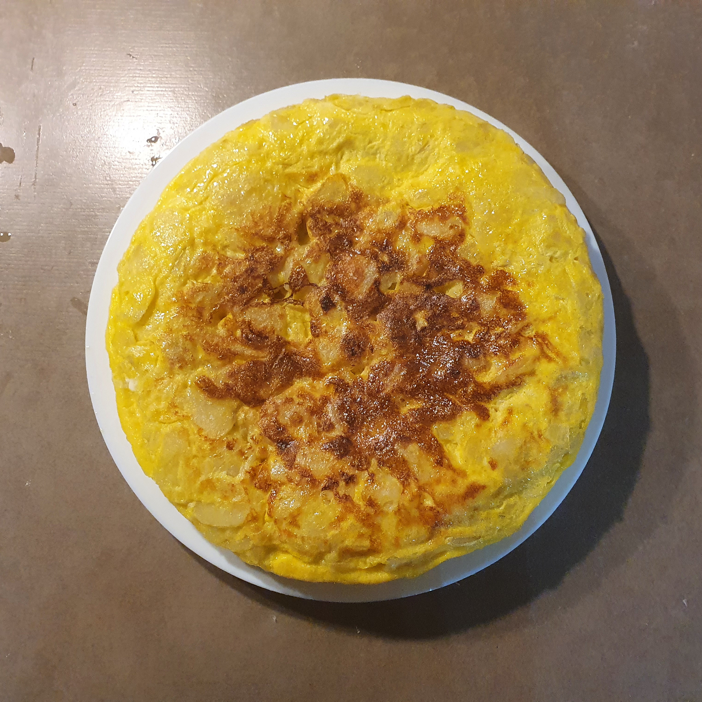
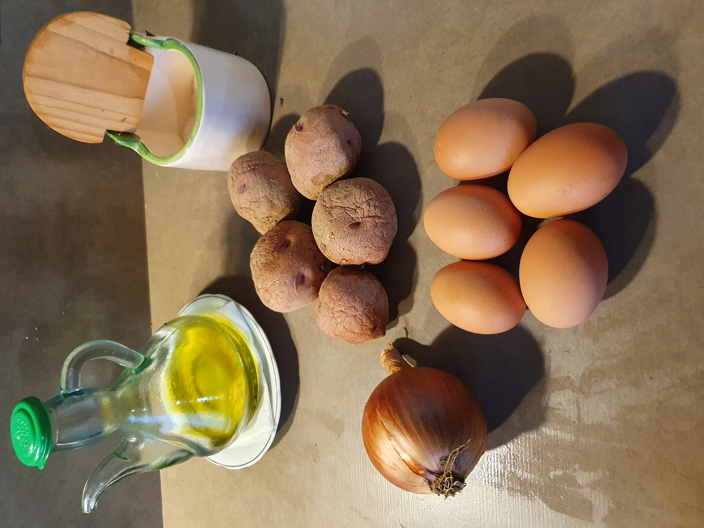
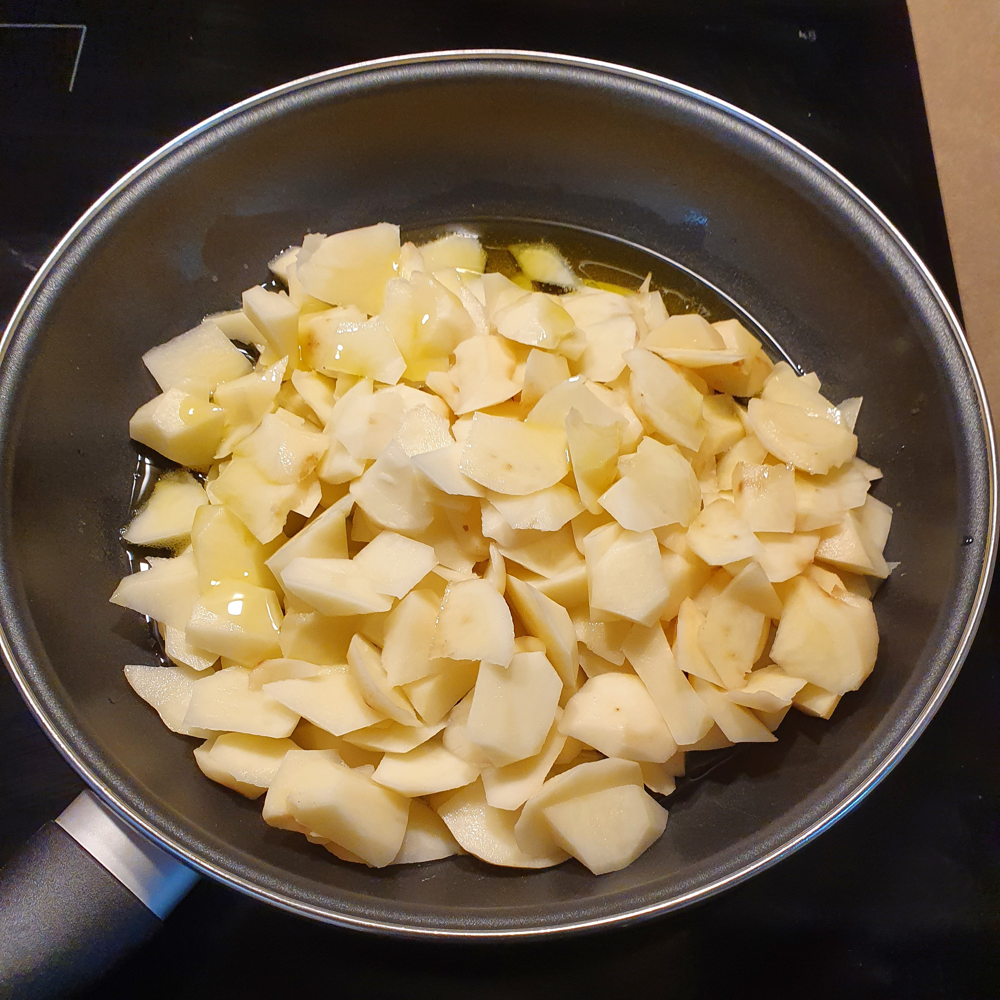
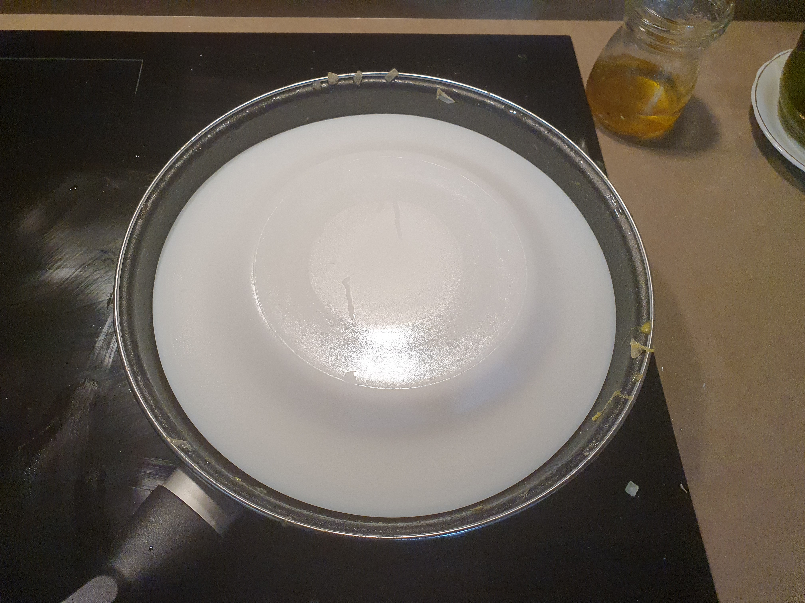

Recepta de truita de patates

Ingredients
- Ou
- Patata
- Oli
- Sal
- Ceba
Instruccions
Per preparar una truita bàsica, bat uns quants ous en un bol amb una mica de sal fins que quedin ben homogenis. Si vols que surti més esponjosa, pots afegir-hi una cullerada de llet o d’aigua. És important barrejar bé perquè la truita quedi suau i uniforme.
Escalfa una paella amb un raig d’oli i, quan sigui calenta, aboca-hi els ous batuts. Mantén el foc a intensitat mitjana i, amb una espàtula, remou lleugerament el centre perquè quedi una textura més cremosa. Deixa que els laterals vagin quallant sense que el fons es cremi.
Quan tingui la consistència que prefereixes, doblega la truita amb cura i dóna-li uns segons més de cocció. Si la vols sucosa, retira-la abans; si la prefereixes més feta, deixa-la una mica més a la paella. Serveix-la immediatament per obtenir la millor textura.
Galeria d'imatges
-

-

-
